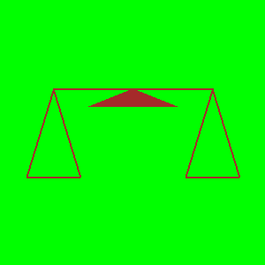
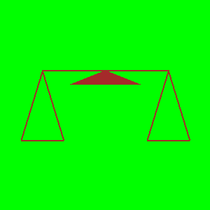
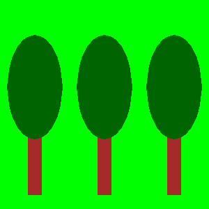
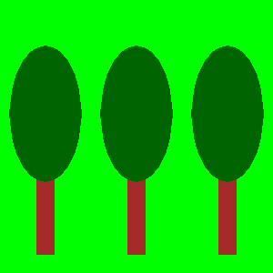

Drawing from reference¶
We have just learned how to draw some basic shapes in the PyGame environment using drawing functions. As it was mentioned before, all such images consist of pixels. These are so-called raster, or bitmap, images. We have seen that, in order to draw basic shapes, we need to know the coordinates of pixels that determine each such shape. However, in a more realistic situation these coordinates are not directly assigned and we need to set them ourselves.
If we want to programmatically generate an image using an existing bitmap as a reference, we can determine the coordinates of the points from the given image. We can magnify the image in one of the image viewing programs to get each pixel to look like a square. That can look for example like this:

We can see that this image was generated by drawing 4 horizontal and 2 vertical lines, an also that all 6 lines are black and 1 pixel wide. Since we know that x coordinate is calculated from left to right and y from top to bottom, as well as that counting starts from zero, we can determine the coordinates of the start and end points of all six lines simply by counting.
Ladder¶
Read the coordinates from the enlarged image above and write a program that draws ladders like those.
Hint: by counting (from zero) we can find that the coordinates of the end points of the left vertical line are (5, 3) and (5, 36). The coordinates of the end points of the other 5 lines are to be determined in the same way.
The real size image is very small, only 20 pixels wide and 40 pixels high. We could also determine the coordinates of the points for larger images by counting, but that would be tedious and prone to errors (that’s why we chose such a small image in this example). The good news is that image viewing and editing programs typically show the coordinates of the pixel on which the mouse cursor currently is. The cursor coordinates are usually written somewhere in the status bar at the bottom of the window in which the program is running, often in the lower left corner.
For example, in the Paint drawing program, when an image is magnified 8 times and the grid that emphasizes individual pixels is shown, we can easily position the cursor on any pixel and read its coordinates. In this picture, the mouse cursor was on the red pixel, which, as we said earlier, has the coordinates (5, 36).

In the following tasks you need to write a program that draws a drawing as similar as possible to the given one. You can see the drawings you need to draw when you click the “Play task” button.
To help you determine the coordinates of important points in a drawing, the program you start by clicking the “Play task” button will, beside the drawing, show the coordinates of the point where the mouse cursor is. To make the reading easier, in all examples the coordinates of all significant points are rounded to 5 pixels (they end with zero or five).
If you want to solve these tasks outside of the web browser, in your programming environment, you can download the images that your programs need to draw, open them in an image viewer, and read the coordinates of the important points there.
 

{kind=link}

 

{kind=link}
Антена¶
Before cable television, television signals were received by antennas that were usually placed on the roofs of people’s homes and buildings. In this task one such antenna is to be drawn.
As you can see when you run the example, the drawing consists of seven lines. The width of the vertical line is 4 pixels, the top two horizontal ones 1, the middle two 2, and the bottom two 3 pixels. The color of the background is “skyblue”.
The complete program is provided, you can try it here as well.
Balance scale¶
This drawing consists of a line (whose width is 2) and three triangles. The middle triangle, which represents the support of the balance, is filled with color, so when drawing it the width parameter should be omitted, while for the other two triangles width 2 should be specified.
Smiley¶
In this task, the work to be done is a bit more complex. Since the drawing is composed of circles and ellipses, we cannot accurately read all the coordinates and measurements we need directly. What we can do is to read for each ellipse the \(x\) coordinate of its leftmost and rightmost point ((\(X_L\) and \(X_R\)), as well as the \(y\) coordinate of the highest and lowest point (\(Y_T\) and \(Y_B\)). After that, the width and height of the ellipse can be calculated as the differences of the corresponding \(x\) (for width), and \(y\) coordinates (for height).
As for the circle, we have various options:
we can draw the circle as an ellipse inscribed in a square (using the pg.draw.ellipse function)
we can approximate the coordinates of the center of the circle
if we want to determine the coordinates of the circle center more accurately, we can first find the points \(X_L\), \(X_R\), \(Y_T\), and \(Y_B\) as we did for ellipses, and then calculate the coordinates of the center using formulas \(X_c = {{X_R + X_L} \over 2}\) and \(Y_c = {{Y_T + Y_B} \over 2}\)
House¶
The drawing of a house consists of a brown rectangle and a red triangle. We can draw the triangle as a polygon with three vertices. The sun is depicted as an orange circle and the grass as a green rectangle. Mind the order of drawing for the grass and the sun.
It is enough to read the coordinates of the center of the circle representing the Sun approximately. For those who want a little mathematical challenge, note that the coordinates of the center can be more accurately determined similar to the previous task, although the lowest point is not visible and the coordinate \(Y_B\) cannot be read.
If you want to see how you can determine the coordinates of the center with more accurate reading and calculating, click on the “Determining the center” button.
As in the previous task, let \(X_L\) and \(X_R\) denote the \(x\) coordinates of the leftmost and rightmost point of the circle that represents the Sun, and \(Y_T\), \(Y_B\) the \(y\) coordinates of the highest and lowest point of that circle.
We can determine the \(x\) coordinate of the center as we did in the previous example, \(X_C = {{X_R + X_L} \over 2}\).
Since the lowest point of the circle is not visible, we cannot read the value \(Y_B\), but we can determine the radius \(r\) using \(r = X_C - X_L\) or \(r = X_R - X_C\). Now the \(y\) coordinate of the center is easily obtained: \(Y_C = Y_T + r\), so we didn’t even need \(Y_B\).
Trees¶
Three exact same trees are to be drawn, so that each subsequent tree is obtained by moving the previous one to the right. Obviously, this task could have been given by simply describing the first tree and specifying the distance between two adjacent trees. The program that draws the image is given nevertheless, because using an image to specify a task is clearer and simpler.
To make the task a bit more like a real situation (in which there is no image), in this example reading the \(x\) coordinate is intentionally disabled for the right side of the image. All the required coordinates that you cannot read can be calculated.